The earth's histroy has always been intrinsicly linked to the sea. Explorers, exploiters and traders made the world a much smaller place. The single greatest driver of globalisation. The sea now brings new changes. In the form of a simple 20ft metal box.
Arriving by container ship, 90% everything we own and use, at some point, travels to us , through a vast network of ocean routes and ports that most of us know very little about. It's beautiful. It's scary. This is the shipping industry. The data
visualisations and made for you to sit back, and contemplate the enormity of it all.
